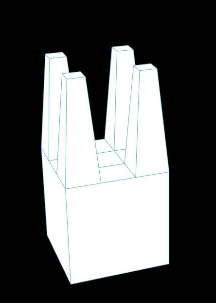
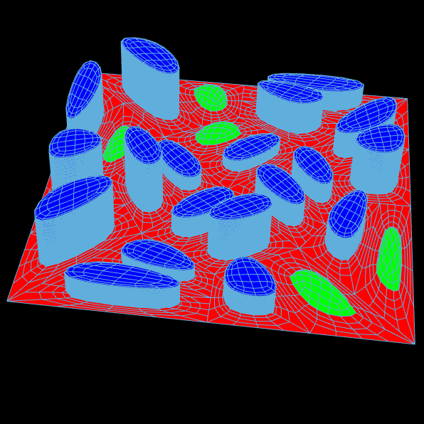

import Rhino.Geometry as rg import math rule1_predecessor = "X" rule1_successor = "F+[[X]-X]-F[-FX]+X" rule2_predecessor = "F" rule2_successor = "FF" genotype = "X" for i in range(iterations): genotype = genotype.replace(rule1_predecessor, rule1_successor) genotype = genotype.replace(rule2_predecessor, rule2_successor) vt = rg.Point3d(0,0,0) vertices = [] angles = [] lines = [] for c in genotype: if c == "+": # Turn right angle -= rotation elif c == "-": # Turn left angle += rotation elif c == "F": # Forward rad = math.radians(angle) next_vt = rg.Point3d(length*math.cos(rad) + vt.X, length*math.sin(rad) + vt.Y, 0) lines.append(rg.Line(vt, next_vt)) vt = next_vt elif c == "[": # Save position vertices.append(vt) angles.append(angle) elif c == "]": # Restore position vt = vertices.pop() angle = angles.pop() L_system = lines
import mola from mola import module_rhino # Create an empty mesh m = mola.Mesh() # Define vertices a = mola.Vertex(0, 0, 0) b = mola.Vertex(15, 0, 0) c = mola.Vertex(15, 10, 0) d = mola.Vertex(0, 10, 0) # Add vertices to mesh vertices = [a, b, c, d] m.vertices = vertices # print(m.vertices) f = mola.Face([a,b,c,d]) f.color = (0.6,0.6,0.6,1) m.faces.append(f) Mesh = module_rhino.display_mesh(m)
import mola # m = mola.construct_icosahedron(Radius) # Mesh = module_rhino.display_mesh(m) torus = mola.construct_torus(Radius, Radius2) mola.color_faces_by_curvature(torus.faces) # mola.color_faces_by_compactness(torus.faces) # mola.color_faces_by_area(torus.faces) Mesh = mola.module_rhino.display_mesh(torus) spheres = [] for v in torus.vertices: radius = mola.math_map(v.z, -4, 4, 0.05, 0.5) s = mola.construct_sphere(radius, v.x, v.y, v.z,9, 9) temp = mola.module_rhino.display_mesh(s) spheres.append(temp) Spheres = spheres
https://en.wikipedia.org/wiki/Catmull–Clark_subdivision_surface
molaMesh = mola.subdivide_mesh_catmull(molaMesh)
molaMesh = mola.subdivide_mesh_extrude_tapered(molaMesh, faceAngles, fractions, doCaps)
molaMesh = mola.mesh_offset(molaMesh, 0.1)
import mola import math import Rhino.Geometry as rg molaMesh = mola.construct_sphere(radius=5, u_res=8, v_res=8) for v in molaMesh.vertices: if v.z > 0: v.z *= 1.8 molaMesh = mola.subdivide_mesh_catmull(molaMesh) # Get height value faceAngles = molaMesh.face_properties(mola.face_angle_vertical) # print (faceAngles) for i in range(len(faceAngles)): faceAngles[i] = abs(math.pi - abs(faceAngles[i])) faceAngles = mola.math_map_list(faceAngles, 0.1, 3) # Get fractions zPositions = molaMesh.face_properties(mola.face_center_z) fractions = mola.math_map_list(zPositions, 0.9, 0.1) doCaps = [True] * len(molaMesh.faces) for i in range(len(zPositions)): if zPositions[i] > 0.2: doCaps[i] = False molaMesh = mola.subdivide_mesh_extrude_tapered(molaMesh, faceAngles, fractions, doCaps) molaMesh = mola.subdivide_mesh_catmull(molaMesh) molaMesh = mola.subdivide_mesh_catmull(molaMesh) molaMesh = mola.mesh_offset(molaMesh, 0.1) mola.color_faces_by_horizontal_angle(molaMesh.faces) Mesh = mola.module_rhino.display_mesh(molaMesh) # outTemp = [] # for face in molaMesh.faces: # outTemp.append(rg.Point3d(mola.face_center(face).x, mola.face_center(face).y, mola.face_center(face).z))

import Rhino.Geometry as rg import mola mMesh = mola.construct_box(0,0,0,10,10,10) dividedMeshes = mola.subdivide_face_split_grid(mMesh.faces[1], 3, 3) dividedMeshes.extend( mola.subdivide_face_extrude_tapered(dividedMeshes[0], 10)) dividedMeshes.extend( mola.subdivide_face_extrude_tapered(dividedMeshes[2], 10)) dividedMeshes.extend( mola.subdivide_face_extrude_tapered(dividedMeshes[6], 10)) dividedMeshes.extend( mola.subdivide_face_extrude_tapered(dividedMeshes[8], 10)) dividedMeshes.pop(0) dividedMeshes.pop(1) dividedMeshes.pop(4) dividedMeshes.pop(5) mMesh.faces.pop(1) mMesh.faces.extend(dividedMeshes) Faces = mola.module_rhino.display_faces([mMesh.faces[1]]) Mesh = mola.module_rhino.display_mesh(mMesh)
for face in mMesh.faces: face.group = "plot"

import mola import random import Rhino.Geometry as rg mMesh = mola.construct_single_face( [mola.Vertex(0, 0, 0), mola.Vertex(10, 0, 0), mola.Vertex(10, 10, 0), mola.Vertex(0, 10, 0)] ) newMesh = mola.Mesh() for face in mMesh.faces: newFaces = mola.subdivide_face_extrude_to_point_center(face, 0) newMesh.faces.extend(newFaces) mMesh = newMesh mMesh.update_topology() mMesh = mola.subdivide_mesh_catmull(mMesh) newMesh = mola.Mesh() for face in mMesh.faces: newFaces = mola.subdivide_face_split_grid(face, 2, 1) newMesh.faces.extend(newFaces) mMesh = newMesh for face in mMesh.faces: face.group = "plot" newMesh = mola.Mesh() for f in mMesh.faces: if f.group == "plot": new_faces = mola.subdivide_face_extrude_tapered(f, 0, 0.3, True) for nf in new_faces[:-1]: nf.group = "circulation" nf.color = (1, 0, 0) # [-1] is take the last element [:-1] is for taking all elements new_faces[-1].group = "construction" new_faces[-1].color = (0.5, 0, 1) newMesh.faces.extend(new_faces) else: newMesh.faces.append(f) mMesh = newMesh ######################################################################## newMesh = mola.Mesh() for face in mMesh.faces: if face.group == "construction": if random.random() < 0.2: newFaces = mola.subdivide_face_extrude_to_point_center(face, 1) for newFace in newFaces: newFace.group = "park" newFace.color = (0, 1, 0) newMesh.faces.extend(newFaces) else: floorNumber = random.randint(5, 20) buildingSurface = [face] for i in range(floorNumber): buildingSurface.extend(mola.subdivide_face_extrude(buildingSurface[-1], 0.1, False)) buildingSurface.pop(-6) for newFace in buildingSurface: newFace.group = "building" newFace.color = (0, 0, 1) newMesh.faces.extend(buildingSurface) newMesh.faces.append(face) newMesh.update_topology() newMesh = mola.subdivide_mesh_catmull(newMesh) newMesh = mola.subdivide_mesh_catmull(newMesh) mMesh = newMesh Mesh = mola.module_rhino.display_mesh(mMesh)
City density
Monuments
Typologies